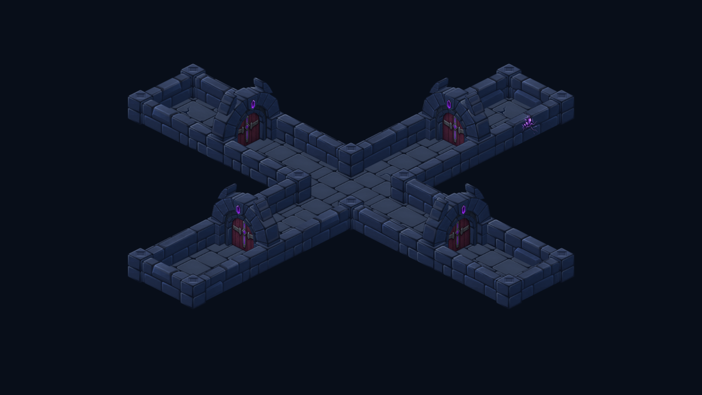
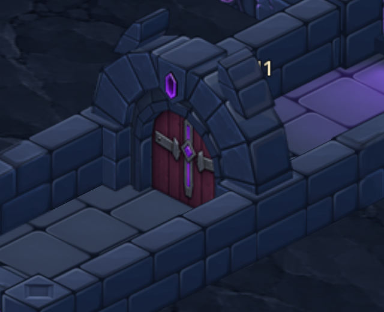
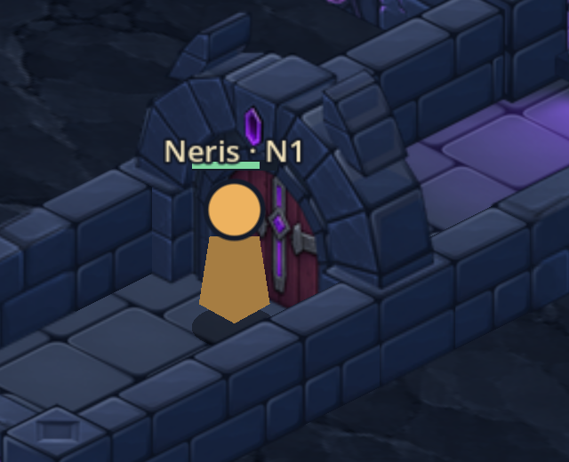

La porte validée est intégrée
Captures réelles de Godot : géométrie v6, peinture v7, battant lisse et raccords alignés sur les joints des murs. Les 143 autres sprites sont conservés. La mémoire des atlas reste à 11 Mio.

Raccords dans les quatre orientations
Personnage et profondeur

Personnage derrière, près du seuil.

Personnage devant, près du seuil.
Vérifications : export et import réussis, correspondance des pixels comparés avec l’aperçu accepté, reconstruction des deux couches, suppression/restauration des portes et sept états de contrôle en jeu. Le diagnostic des contacts ne trouve aucune erreur d’ordre dans les intérieurs solides ; il exclut les franges peintes et filtrées. Pas de test sur téléphone ni de campagne complète.
Contrôles des sprites · Diagnostic des contacts · États en jeu · Sources validées · Aperçu approuvé